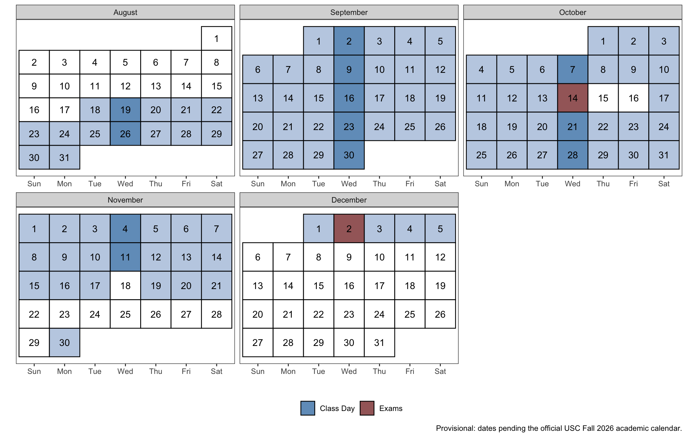
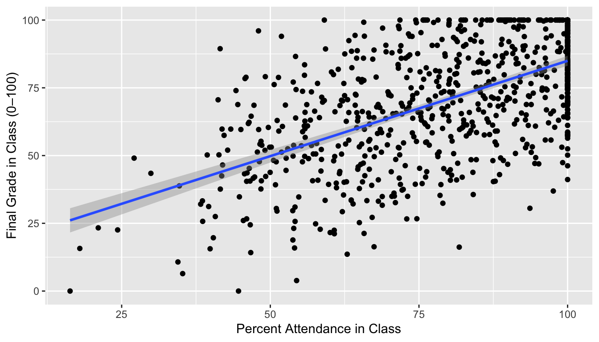

Syllabus
CRJU 705: Quantitative Methods in Criminal Justice · Fall 2026
Provisional dates. The meeting pattern (Tuesdays, 6:00–8:45 pm, Currell 204) and the no-class dates (Oct 27, Nov 3, and Thanksgiving week) are set. The individual session dates still derive from a provisional semester start and will be confirmed against USC’s official Fall 2026 calendar before the semester begins. Topics, their order, and course policies are final.
📄 Download this syllabus as a PDF — handy for printing or Canvas. The web version on this page is always the authoritative one.
Instructor: Dr. Scott M. Mourtgos · mourtgos@mailbox.sc.edu · Office: Currell 111 · Office hours: on request Class meetings: Tuesdays, 6:00–8:45 pm · Currell 204
Course Description
“It is easy to lie with statistics; it is easier to lie without them.” — Frederick Mosteller
Statistics is one of the most powerful tools for understanding the world around us, especially within the context of crime and criminal justice. Beyond its formulas and graphs, statistics provides a framework for making sense of uncertainty, identifying patterns, and distinguishing between random variation and meaningful trends. In criminal justice, this means moving beyond anecdotes to examine whether a policy truly works, whether a disparity is real, or whether a change in crime rates is more than just chance. This course is as much about learning to think critically with data as it is about mastering statistical techniques. We will explore how statistical reasoning shapes our understanding of criminal justice, and how it informs policy decisions with real-world consequences. While this class will not turn you into a data scientist overnight, it will equip you with the skills to analyze data, question assumptions, and make informed, evidence-based arguments in the field of criminology.
A distinctive feature of this course: you will learn both traditional (frequentist) and Bayesian approaches to statistical inference, side by side. You will also build practical data wrangling skills from the first weeks of the course — importing, cleaning, transforming, and visualizing real data — so that by the time you reach the final project, working with messy real-world data feels routine rather than intimidating.
Academic Bulletin
Descriptive and inferential statistics and the use of computers in criminal justice.
Course Objectives
By the end of this course, students will be able to:
- Identify the role of statistics in criminology and criminal justice research.
- Distinguish between different types of data and levels of measurement.
- Import, clean, transform, and visualize real data in R using modern (tidyverse) tools.
- Apply descriptive statistics to summarize and interpret data.
- Explain the concepts of probability and distributions as they relate to criminological data.
- Conduct and interpret basic statistical tests — from both frequentist and Bayesian perspectives — including t-tests, ANOVA, correlation, and regression.
- Critically evaluate statistical claims in criminal justice policy and research.
- Effectively communicate statistical findings in both written and visual formats.
General Assignment Information
This course requires consistent engagement and practice. You are expected to attend and actively participate in class sessions, complete in-class exercises in R, and contribute to discussions. Assigned readings — from the Stanton textbook and from R for Data Science — prepare you for lectures and hands-on demonstrations. You will complete in-class exercises and submit R scripts and output from weekly homework assignments. Through the first half of the semester, the homework also includes a short set of exercises from R for Data Science — curated, not the full set — submitted in the same R script. Beginning mid-semester, several homework assignments include a project checkpoint: a short component where you apply that week’s technique to the dataset you selected for your final project, so the project builds incrementally rather than all at once. The course concludes with a final project that integrates conceptual understanding with applied statistical skills in R.
Use of Artificial Intelligence Tools
A major component of this course is learning R, an open-source statistical programming language that is widely used in criminal justice research, data science, and countless other fields. The ability to write, troubleshoot, and understand R code is a highly valuable skill that will serve you well in academic research, professional analysis, and evidence-based decision making. Just like learning a spoken language, the more you actively practice writing and using R, the more fluent and confident you will become.
Artificial intelligence tools can be powerful partners in this learning process. They can help explain concepts in plain language, suggest approaches for solving problems, and help debug your code when you’re stuck. When used well, AI can speed up your understanding and serve as a second set of eyes on your work.
However, relying on AI to simply produce code for you — without understanding it yourself — is a dangerous shortcut. AI tools can and do make mistakes. If you have not learned R yourself, you will not know when the AI is wrong, and you will struggle to adapt or improve the code to fit your own analysis. Treat AI as a collaborator, not a crutch. You should be able to explain every line of code you submit, whether it came from your own work or was inspired by AI assistance.
This is not just a philosophical point — it will directly impact your grade. The mid-term exam is conducted in class and monitored, requiring you to write and troubleshoot R code without outside help. Students who have relied too heavily on AI almost always perform poorly on this assessment. Similarly, for the final project, you will present your code to the class and explain how and why it works. If you cannot confidently do so, your grade will be affected.
In short: AI tools are welcome for support and verification, but they are not a replacement for learning the skills yourself. Use them to supplement your learning, not to bypass it.
Assignment Due Dates
Dates for all assignments and exams are listed on the course Canvas page and discussed in class. Course materials (slides, labs, homework) live on this website; submissions go through Canvas.
Final Project Information
The final project is the culminating assignment for this course, integrating conceptual understanding with applied statistical skills in R. You will select your own dataset early — dataset selection is due at Session 7 (the applied data workshop) — and project checkpoints attached to homework in the second half of the semester keep your analysis moving. Session 12 closes with a project code clinic — open Q&A on your own code — before presentations.
Your completed project — R script, output, and written report — is due via Canvas by 11:59 pm on Sunday, November 29, 2026 (the Sunday before presentations day). You will then present your work in class at Session 13 on December 01, 2026.
There will be absolutely no assignments, exams, or final projects accepted after that date and time. None. Add it to your calendar now. Failure to submit any part of the project by that deadline will result in a zero toward your final grade. No appeals will be accepted, so please plan ahead.
You are responsible for ensuring that your final project is submitted successfully and on time, with all required components included: the R script, output, and written report.
Required Materials
- Textbook: Reasoning with Data — An Introduction to Traditional and Bayesian Statistics Using R, by Jeffrey M. Stanton
- Free online textbook: R for Data Science, 2nd ed., by Wickham, Çetinkaya-Rundel & Grolemund (assigned readings in the first half of the course)
- Laptop computer required in class with R and RStudio installed before the second class session — see the installation guide. Bring it to every class meeting.
- Reliable internet access (Wi-Fi capability during class)
The Stanton textbook is essential for your success in this course. An electronic edition is fine.
Contacting the Instructor
The fastest way to contact me is email: mourtgos@mailbox.sc.edu. I actively check and respond to emails throughout the day and will always try to respond within 72 hours, not including weekends and holidays. If you have a more urgent request, note that in the subject line.
All communications between students and instructors are to be respectful in content and professional in tone. This means: using salutations and closings, stating the purpose of the email with enough background to respond, using complete sentences, and refraining from profanity.
Class Schedule
Students must read all assigned material prior to each class session. You will perform significantly better in this course if you complete the assigned readings before class. Assigned readings are subject to change based on the pace of the class; any changes will be announced promptly.
The calendar below shows the semester at a glance: class meetings in dark blue, the mid-term and final presentations in red.
The full week-by-week schedule — with readings, slides, labs, and homework links — lives on the Schedule page. In outline:
Session 1 — August 18
Topics: Class introduction · Why statistics is awesome · Types of data and levels of measurement · Using R and RStudio
Readings due before class: Stanton Introduction + Appendices A–C; this syllabus. Install R and RStudio first — see Resources.
Homework: swirl tutorials in R (instructions in class) plus the assigned R4DS Ch. 1–2 exercises. Submit your R script files via Canvas by 11:59 pm Sunday ahead of the next session. Read Stanton Ch. 1 and R4DS Ch. 1–2 before next class.
Session 2 — August 25
Topics: Descriptive statistics & exploratory data analysis
Readings due: Stanton Ch. 1 · R4DS Ch. 1 (Data visualization) & Ch. 2 (Workflow: basics)
Homework: Problem set 2 (includes the R4DS Ch. 3–4 exercises) · Read Stanton Ch. 2 and R4DS Ch. 3–4
Session 3 — September 01
Topics: Probability, taught via simulation
Readings due: Stanton Ch. 2 · R4DS Ch. 3 (Data transformation) & Ch. 4 (Workflow: code style)
In-class exercise (graded) · Homework: Problem set 3 (includes the R4DS Ch. 5–6 exercises) · Read Stanton Ch. 3 and R4DS Ch. 5–6
Session 4 — September 08
Topics: Sampling distributions, taught via simulation
Readings due: Stanton Ch. 3 · R4DS Ch. 5 (Data tidying) & Ch. 6 (Workflow: scripts & projects)
In-class exercise (graded) · Homework: Problem set 4 (includes the R4DS Ch. 7–8 exercises) · Read Stanton Ch. 4 and R4DS Ch. 7–8
Session 5 — September 15
Topics: The logic of inference using confidence intervals — on real data
Readings due: Stanton Ch. 4 · R4DS Ch. 7 (Data import) & Ch. 8 (Workflow: getting help)
In-class exercise (graded) · Homework: Problem set 5 (includes the R4DS Ch. 19 + 18 exercises) · Read Stanton Ch. 5 and R4DS Ch. 19 (skim Ch. 18)
Session 6 — September 22
Topics: Hypothesis testing — Bayesian vs. traditional (frequentist), with t-tests
Readings due: Stanton Ch. 5 · R4DS Ch. 19 (Joins); skim Ch. 18 (Missing values)
In-class exercise (graded) · Homework: Problem set 6 · No new Stanton chapter · Final-project dataset selection is due at Session 7 — come with a candidate and be ready to say what one row represents
Session 7 — September 29
Topics: Applied data workshop — the full pipeline on messy real data: import → tidy → describe → test (frequentist and Bayesian)
Due in class: Final-project dataset selection
Homework: Problem set 7 — the workshop write-up plus your formal final-project dataset selection · Read Stanton Ch. 6 · Bring your dataset and script to Session 8, where project checkpoints begin
Session 8 — October 06
Topics: ANOVA
Readings due: Stanton Ch. 6
In-class exercise (graded) · Homework: Problem set 8 (includes project checkpoint 1: descriptives on your project data) · Study for mid-term
Session 9 — October 13
Topics: Mid-Term Exam (in class) — covers Sessions 1–8
No in-class exercise or problem set. Read Stanton Ch. 7 before next class.
Session 10 — October 20
Topics: Measures of association / correlation
Readings due: Stanton Ch. 7
In-class exercise (graded) · Homework: Problem set 10 (includes project checkpoint 2) · Read Stanton Ch. 8
Session 11 — November 10
Topics: Multiple linear regression
Readings due: Stanton Ch. 8
In-class exercise (graded) · Homework: Problem set 11 (includes project checkpoint 3) · Read Stanton Ch. 10
Session 12 — November 17
Topics: Logistic regression
Readings due: Stanton Ch. 10
In-class exercise (graded) · Homework: Problem set 12 (includes project checkpoint 4) — due the Sunday after this session · Full project due via Canvas by 11:59 pm on Sunday, November 29, one week later
This is the last session with new statistical content. The final half hour is a project code clinic — bring your project code and your two most stuck-on problems — and presentation order is announced today.
Session 13 — December 01
Topics: Final Project Presentations (in class)
The final project — R script, output, and written report — is due via Canvas by 11:59 pm on Sunday, November 29, 2026, the Sunday before this session. Presentations happen in class today. No late submissions, no appeals. Plan ahead.
Course Policies
Academic Honesty
Academic honesty is expected, and dishonesty will not be tolerated. The University policy on academic dishonesty can be found on the university website. An act of academic dishonesty will result in a failing course grade and a recommendation of additional disciplinary action. Any of the following violations will be considered academic dishonesty:
- Cheating: the giving or receiving of any unauthorized assistance on any academic work;
- Plagiarism: presenting the language, structures or ideas of another person or persons as one’s own academic work;
- Falsification: any untrue statement, either oral or written, concerning one’s own academic work or the academic work of another student, or the unauthorized alteration of any academic record; and
- Original work & “self-plagiarism”: unless specifically allowed by the instructor, all academic work undertaken in a course must be original.
Respectful & Appropriate Class Conduct
Public policy processes, including the criminal justice system, inherently center on topics for which individuals hold strong opinions. This course will challenge students to acknowledge and respect perspectives that differ from their own. Respectful behavior is the expectation, norm, and requirement in this class. Arguments and ideas may (and are expected to) be challenged, but personal attacks, disrespectful behavior, and/or hateful attitudes will not be tolerated.
Late Policy
I do not accept late assignments of any kind. Missing submissions will be awarded zero points automatically. Most important: contact me beforehand if you are experiencing difficulties that will impact your ability to turn in work. Reaching out after the due date has passed is not helpful to you or me.
Grading Scheme
Your final grade has three components:
| Component | Weight | What it covers |
|---|---|---|
| Homework, labs & in-class exercises | 45% | Weekly problem sets (including the R4DS exercises attached to Problem Sets 2–5 and the project checkpoints in Problem Sets 8–12) and the graded in-class exercises |
| Mid-term exam | 25% | In class at Session 9; covers Sessions 1–8 |
| Final project | 30% | Written report, script & output (22%) + in-class presentation (8%) |
Graded in-class exercises are scored on active participation that day and cannot be made up (see the Attendance Policy). Final letter grades follow the standard scale:
| Course Percentage | Letter Grade | Description |
|---|---|---|
| 90-100 | A | Outstanding |
| 87-89 | B+ | Good work |
| 80-86 | B | Acceptable work |
| 77-79 | C+ | Slightly Below standard |
| 70-76 | C | Below standard |
| 67-69 | D+ | Inadequate work |
| 60-66 | D | Very Inadequate work |
| Below 60 | F | Failing |
Extra Credit
I do not offer extra credit for this course.
Contested Grades
If you would like an assignment regraded, email me in advance stating clearly what the issue is and the reasons justifying an adjustment. We will then schedule an in-person meeting. If I agree to regrade, the entire assignment will be evaluated again — your grade can be lowered as well as raised, and the new grade is final. For concerns about a single item, just email me or bring it up in class. No regrading is done for the final project, as the semester will have ended.
Grade Grubbing
“Grade grubbing” — pestering for a higher grade or repeatedly asking for extra credit — will not help you in this course. Instead of grade grubbing, focus on understanding the material and doing your best on each assignment: that improves both your grade and your actual skills.
Attendance Policy
Attendance is mandatory for our weekly class meetings. We all have busy lives, so while being on time is expected, I’d rather you miss ten minutes than a whole class. Students are expected to fully engage in class discussion and participate in the in-class exercises. The purpose of the class is for everyone to discuss the readings, not to have them explained.
I generally do not take formal attendance; however, during most weeks there is a graded in-class exercise. Points for these exercises are awarded based on active participation in class that day, count toward the homework/labs/in-class component of your grade (45%), and cannot be made up. Missing class means missing the opportunity to earn them.
Consider the following (simulated data, courtesy of an approach by Steven Miller): a simple linear regression of a student’s final grade on percentage of classes attended suggests an increase of one percent in attendance leads to an estimated increase of 0.704 in the final grade. One missed class is roughly a five-percent decrease in semester attendance — an estimated decrease of 3.52 in the overall grade. The effect is precise (t = 20.37) and the likelihood of no actual relationship is almost zero (R² = 0.342).

Instructor Expectations
I commit to being your mentor and facilitator of the educational experience:
- I will design the course to include reading materials and assignments that challenge students and provide opportunities to learn and practice course content.
- I will respond to emails within 72 hours, not including weekends and holidays (normally much faster). If you do not hear from me within 72 hours, please email again.
- I will be available for individual consultation via virtual office hours, email, or phone — not restricted to campus or banker’s hours.
- I will provide feedback on assignments in a timely manner.
- I will ensure and enforce a respectful atmosphere, open to questions, discussion, and ethical disagreement.
- I will follow all official University of South Carolina policies regarding classroom conduct, incompletes, and accommodations.
Student Expectations
- Attend class every week (half the battle in life is just showing up).
- Complete all assignments on time.
- Be self-motivated, organized, and willing to stay on top of your schedule.
- Regularly check course announcements on Canvas and update notification settings accordingly.
- If you have questions or are struggling, take the initiative to contact me. If you do not hear back within 72 hours, contact me again.
- Engage with the course, classmates, and professor respectfully and professionally at all times.
Copyright/Fair Use
I will cite and/or reference any materials that I use in this course that I do not create. You, as students, are expected not to distribute any of these materials, resources, quizzes, tests, or homework assignments (whether graded or ungraded).
University Policies
It is my intent that students from all backgrounds and perspectives be well served by this course. Please let me know ways to improve the effectiveness of the course for you personally or for other students or student groups. If any of our class meetings conflict with your religious events, please let me know so that we can make arrangements for you.
- Accommodation of Sincerely Held Beliefs: I will work with students who require schedule changes due to religious or other significant obligations. I will not consider requests based on course content — policy researchers must engage with difficult subjects, and all assignments and lectures are related to our subject matter.
- Veterans and Military Services: The University’s Veterans and Military Services Center (901 Sumter Street, Suite 105) offers support and resources. Please also let me know if you need additional support in this class for any reason.
- Inclusivity: All course activities will be conducted in an atmosphere of friendly participation and interaction, recognizing and appreciating the unique experiences, background, and point of view each student brings.
- Accessibility and Disability: If you have a documented disability and expect reasonable accommodation, please notify me at least one week before accommodation is needed and provide SDRC documentation first.
- Ethics and the Carolinian Creed: This course fosters a climate free of harassment and discrimination consistent with the Carolinian Creed and the Student Code of Conduct.
- Title IX: As a responsible employee, I am obligated to report information you provide to me about situations involving sexual harassment or assault.
- Values (credit to Dr. David Moscowitz): Two core values, inquiry and civility, govern our class. Inquiry demands an open forum for exchange and substantiation of ideas; civility demands ultimate respect for the voice, rights, and safety of others. Good discussions can be energetic and passionate but not abusive.
Academic Success Resources
- Student Disability Resource Center: Students with disabilities should contact the SDRC (1705 College Street, Close-Hipp Suite 102, 803-777-6142) to arrange appropriate accommodations, and contact me within the first week of the semester.
- Student Success Center: Peer tutoring, supplemental instruction, peer writing support, and success consultations — offered to all UofSC students at no additional cost. Call 803-777-1000 or visit the Thomas Cooper Library (Mezzanine Level).
- Writing Center: Open to any student needing assistance with a writing project at any stage of development (Byrnes 703).
- University Libraries: Books, articles, subject-specific resources, and citation help. Not sure where to start? Ask a Librarian.
- Counseling Services and Mental Health: If stress is impacting your ability to do schoolwork, maintain relationships, eat, sleep, or enjoy yourself, please reach out. Counseling & Psychiatry: (803) 777-5223 or MyHealthSpace, with after-hours crisis counseling available. See University Health Services Mental Health for all resources.
- Interpersonal Violence: Interpersonal violence — including sexual harassment, relationship violence, sexual assault, and stalking — is prohibited at UofSC. Resources are at the Stop Interpersonal Violence website. As faculty, I must report all incidents of interpersonal violence and sexual misconduct, and thus cannot guarantee confidentiality; you can seek confidential resources here, make a formal report here, or contact USC Police at 803-777-4215.